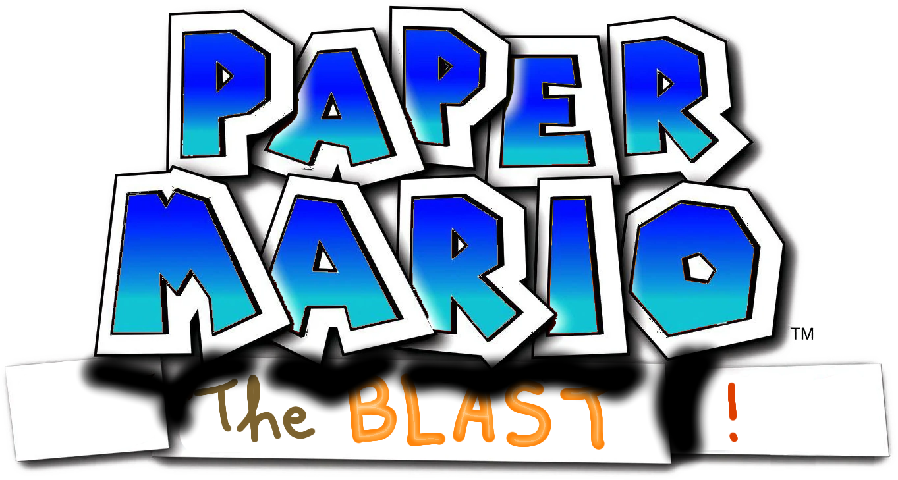
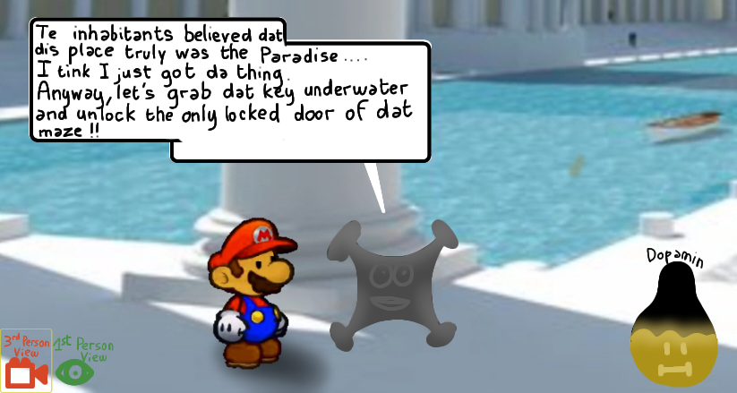
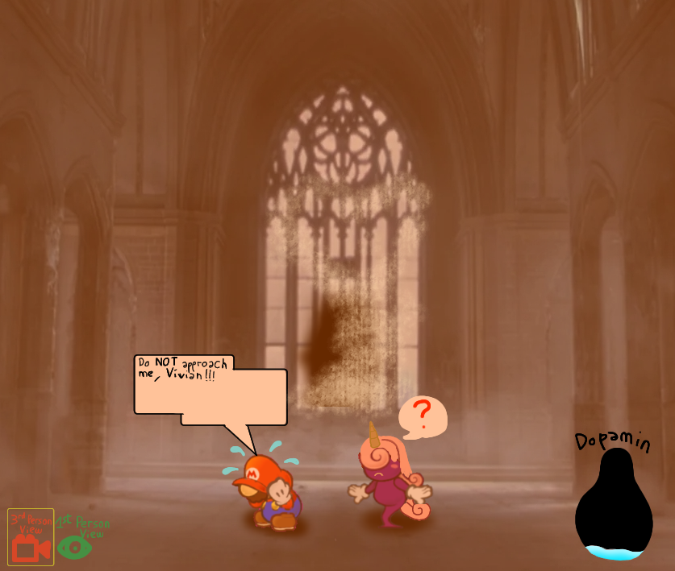
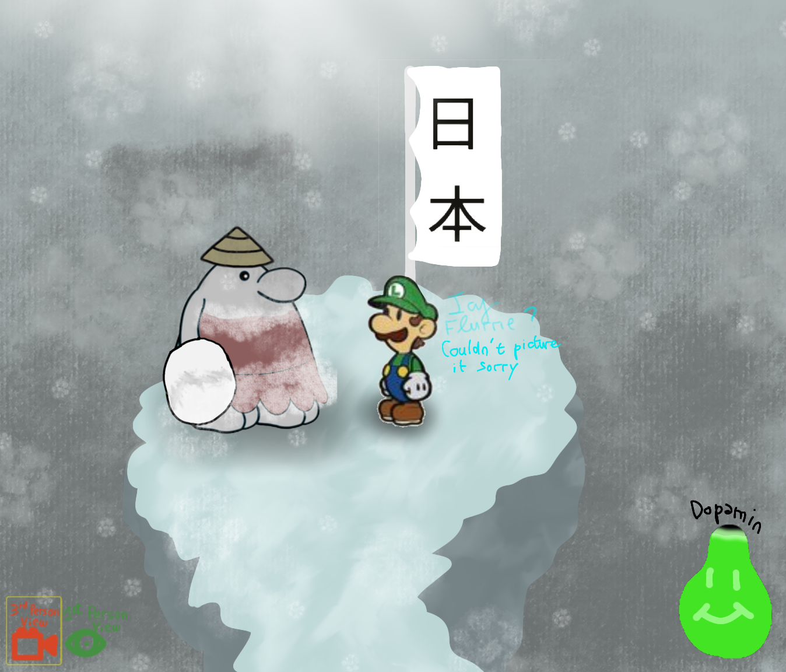
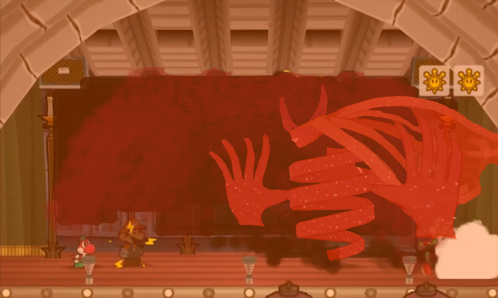
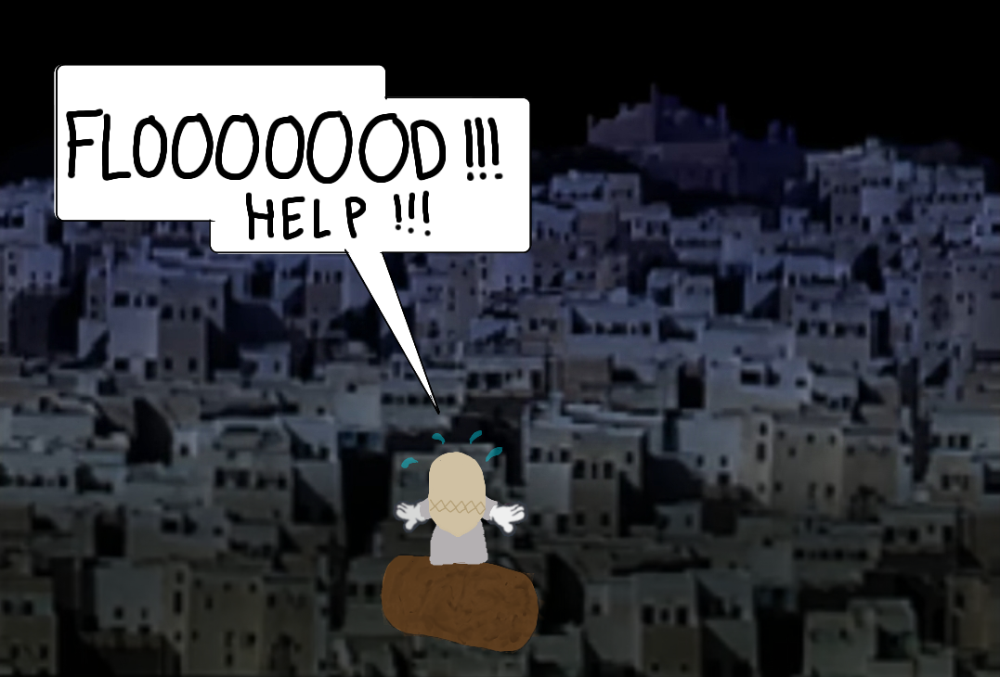

Paper Mario: The BLAST ! is currently a non-official (unannounced) game mod project of Paper Mario : The Thousand-Year Door , on GameCube. The main reason for it being unannounced is that cheer progress on our current project: Super Mario Epic Wii is being made, while our enthusiasm for modding is slowly wiping out. All of these factors lead us to announce this project as a Concept Art project!
However, the story of the game is all top-notch , original and actual! You may like it (if you are a fan of plexus stories)! This project was planned back in December 2024, after the ineluctable rising fame of the Remake version of TTYD on Switch, painting a more attractive version of the GCN game the players ever knew. Yet in July 2025, the development started with code disassembling in order to get a comprehensive structure of TTYD's architecture. And it lately (December 2025) took the form of Concept Arts, as announced.
In TTYD, Mario had to collect the 7 collect to open a sealed-away door in which Peach was being held capture by the X-Nauts. He collects all of them, heads to the Shadow Palace, takes down the Shadow Queen that Grodus invoked. You know... And that's the END of Mario's adventure! After that, everyone just leaves and goes back home. But .... this is just the beginning of the aftermath! Right after the heroes' departure from the Final Battle Area, a portion of power from Shadow Queen stayed alive, morphing to a heavy dark dust, and starts scattering slowly into the ground by exiting the ceiling. It is important to note that this anti-artefact had no direct impact on people.
About 3 years later, Mario decides to stop by Rogueport for a surprise visit. But he ain't facing the Rogueport he ever knew: he's instead facing a gloomy and much much dirtier version of Rogueport. What would have happened to it? Before wandering uslessly, he chatted with a few characters on-board, but a confusing feeling was dominating them: Rude Talkings! And chats were so with all the inhabitants of Rogueport. Crossing deeper into the place, Mario finds horrific calamities: Murder and Staling Spams, alongside other kinds of crimes... He was sure the behaviours of the inhabitants was the total opposite in his last adventure.
All the pipes being locked, intrigued, Mario decides to head to the Sewers by stopping by a sewer pipeline connected to the Open Sea, at the edges of Rogueport, to find the Thousand-Year Door Ruins Room. Arrived, instead of finding that once calm and spacious room, the plumber faces the biggest calamaity: rather than finding the pedestal storing the 7 Crystal Stars he collected in his last adventure, Mario finds all of his 7 partners, hung to the ceiling, with blooding dead-looking corpses. If would for sure come to Mario's mind that they are all dead. Vivian's hair turned violet, with only the core body visible. Such an aftermath! What would have happened at Rogueport? Are my friends still alive? Those questions wandered in Mario's mind endlessly.
After wiping long, the red plumber heads on to a clueless mission, in hope of putting an end to those oddities cursing the world... And yes, Rogueport isn't the only place impacted by these negative auras.
Mario has to wander in a 18-Chapters-long adventure, with an inspired global experience of plexus adventure (such as B3313, without horror!! :p) and a mix-up of the Chapters from the original game, to open a gate to another site sealed completely sealed away from the Game. The games features no artefacts, allowing Mario to trust of all his own abilities. But the partner system is being kept. Speaking of (SPOILER ALERT!), more than a dozen partners would be featured in the mod, with the original partners appearing as different forms. That's especially confusing to meet them a second time in the adventure, while he witnessed their torture upon the ceiling. All of them responded that they their souls are into new bodies. Very unsettling D: ! At the end, Mario faces another underneath the sealed site of Rogueport, a fiery one! But he was unaware that taking him down actually costs his life, because this is a fiery enemies, while Mario faces him powerless. An epic battle occurs, the demon is defeated, and the heroes die. But the Rogueport citizens and people from all over the world's behaviours are back to normal. Sacrifices are worthy, but not for Peach, who won't stop weeping for the sacrified mustchoed bros. She's definitely inconsolable!
With that all being said, let's move on to gameplay features:
The BLAST, as the captial letters may suggest, come from religious sources, implying that a place is being destroyed inevitably, because of people's public sins without repentance or any reform. In Mario's proto-plexus adventure, people can feel guilty as being victim of the BLAST: the demon's power grows more and more influencing within them, preciting a mighty blast all over the world. Mario and co., the human least impacted by that negative rise of power, does everything within their power, to end all this!
NB1: A proto-plexus game doesn't necessarily have dark environments (see concept arts down below). The uncanniness of the game is only about the entirety of the story, atleast.
NB2: For better reference (and understanding), the title would be translated in French as Paper Mario : Le Cri !
Any questions? Feel free to message me about it (EXCEPT LINK OR ELSE I WILL BLOCK YOU OUT IMMEDIATELY) on Discord to ask questions, under my profile: #lidya1446





Concept Arts are the core of the website and are basically what this website is about. They are here for archival purposes, while we're safely finishing Super Mario Epic Wii.